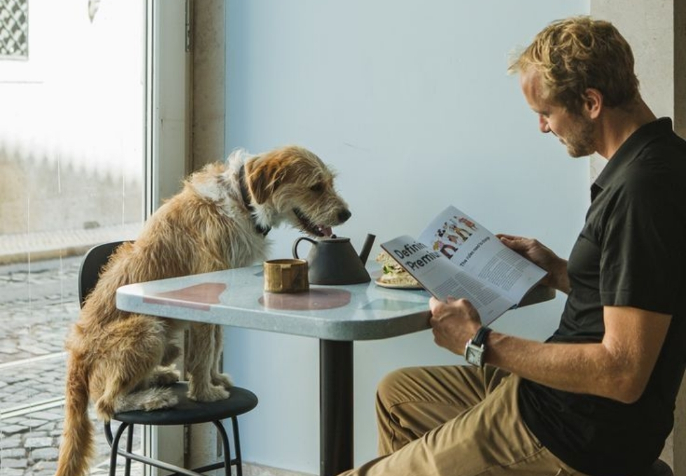

Santiago suma 12 nuevos espacios pet-friendly en la vía pública
La Municipalidad de Santiago anunció la habilitación de bebederos, zonas de descanso con sombra y dispensadores de bolsas biodegradables en 12 puntos del centro y Barrio Italia.

Lo que está pasando en el mundo pet esta semana.
 Local
Local
La Municipalidad de Santiago anunció la habilitación de bebederos, zonas de descanso con sombra y dispensadores de bolsas biodegradables en 12 puntos del centro y Barrio Italia.
 Internacional
Internacional
El vecino país aprobó una reforma que prohíbe el abandono animal y obliga a municipios a costear la esterilización masiva. Expertos chilenos piden replicar el modelo.
 Local
Local
Con 1.200 m² cubiertos, zona de agilidad y área de socialización separada por tamaños, el recinto del Parque Bicentenario abre sus puertas de manera gratuita todos los días del año.
Salud, nutrición y comportamiento para cuidar mejor a tu mascota.
 Nutrición
Nutrición
La frecuencia ideal varía entre cachorros, adultos y seniors. Una veterinaria explica los horarios recomendados y qué pasa si sobrealimentas a tu compañero.
 Comportamiento
Comportamiento
El esconderse, sobrecepillarse o maullar de noche puede ser más que un mal hábito. Un especialista en conducta felina te explica cómo identificar y manejar la ansiedad.
 Salud
Salud
El SAG actualizó el calendario de vacunación antirrábica y el Colegio Médico Veterinario recomienda nuevas vacunas contra enfermedades respiratorias. Todo lo que necesitas saber.
Todo lo que necesitas saber para vivir bien con tu mascota en la ciudad.

Evaluamos más de 30 espacios caninos considerando tamaño, sombra, agua, seguridad y transporte cercano. Estas son las 10 que no puedes dejar de visitar.
 Grooming
Grooming
Certificaciones, higiene del local, trato con los animales y precio justo. Todo lo que debes preguntar antes de dejar a tu mascota en manos de un profesional.

LifestyleDesde Barrio Italia hasta Las Condes, estos son los espacios donde el café es bueno, la onda es mejor y tu mascota siempre es bienvenida.
Productos, servicios y cambios legales que van a marcar el año.

La tendencia que llegó de EE.UU. ya tiene representantes locales. ¿Vale la pena el precio?

El estrés del traslado ya no es excusa para no ir al vet. Los servicios online y a domicilio llegaron para quedarse.

Multas más altas, registro obligatorio de mascotas y nuevas responsabilidades para criadores. Conoce el resumen.
Probamos los 5 collares inteligentes con GPS disponibles en Chile. Batería, precisión y precio: la guía definitiva.

Desde impermeables hasta pijamas térmicos, el segmento de moda pet creció un 45% en el último año según datos de la CCS.